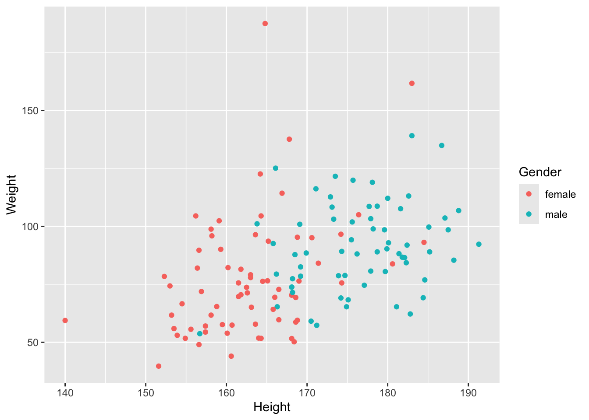

# install.packages("tidyverse")
# install.packages("janitor")
# install.packages("rstatix")
# install.packages("skimr")
# Packages for class
library(dplyr) # Part of tidyverse
library(ggplot2) # Part of tidyverse
library(janitor) # for working with dirty data
library(rstatix) # Pipe-Friendly Framework for Basic Statistical Tests
library(skimr) # Compact and Flexible Summaries of Data
# Text book package with datasets
library(oibiostat)Data Wrangling and Visualization
Working with the tidyverse
Overview
Today we’ll learn tools for:
- Data wrangling with
dplyr(manipulating data) - Summary tables with
janitorandrstatix(easier summaries) - Data visualization with
ggplot2(making plots)
Setup
First, load the packages we’ll use today:
Load the NHANES data:
data("nhanes.samp.adult")Your notes:
Exploring the data
glimpse()
glimpse() is the tidyverse version of str(). It shows you the structure of your data.
glimpse(nhanes.samp.adult)Rows: 135
Columns: 76
$ ID <int> 63147, 57165, 69465, 57313, 56047, 57056, 54643, 5309…
$ SurveyYr <fct> 2011_12, 2009_10, 2011_12, 2009_10, 2009_10, 2009_10,…
$ Gender <fct> male, male, female, female, female, male, female, fem…
$ Age <int> 41, 48, 50, 74, 27, 26, 41, 52, 56, 39, 32, 72, 35, 2…
$ AgeDecade <fct> 40-49, 40-49, 50-59, 70+, 20-29, 20-29, 40-49,…
$ AgeMonths <int> NA, 586, NA, 889, 329, 316, 503, 632, NA, 472, 391, 8…
$ Race1 <fct> White, Black, White, White, White, Mexican, White, Wh…
$ Race3 <fct> White, NA, White, NA, NA, NA, NA, NA, White, NA, NA, …
$ Education <fct> Some College, High School, College Grad, College Grad…
$ MaritalStatus <fct> Married, Married, Divorced, Widowed, NeverMarried, Ne…
$ HHIncome <fct> 25000-34999, 25000-34999, 35000-44999, 45000-54999, 7…
$ HHIncomeMid <int> 30000, 30000, 40000, 50000, 87500, 12500, 60000, 2500…
$ Poverty <dbl> 1.41, 1.36, 2.16, 4.16, 3.51, 0.39, 2.33, 0.05, 5.00,…
$ HomeRooms <int> 6, 6, 10, 7, 7, 5, 9, 6, 7, 6, 4, 12, 6, 6, 8, 1, 5, …
$ HomeOwn <fct> Own, Own, Own, Own, Own, Own, Own, Other, Own, Own, R…
$ Work <fct> NotWorking, NotWorking, NotWorking, NotWorking, Worki…
$ Weight <dbl> 106.8, 77.4, 70.5, 61.7, 70.3, 92.6, 55.6, 82.0, 88.2…
$ Length <dbl> NA, NA, NA, NA, NA, NA, NA, NA, NA, NA, NA, NA, NA, N…
$ HeadCirc <dbl> NA, NA, NA, NA, NA, NA, NA, NA, NA, NA, NA, NA, NA, N…
$ Height <dbl> 188.8, 168.2, 161.8, 158.1, 168.1, 165.8, 155.6, 156.…
$ BMI <dbl> 30.00, 27.36, 26.90, 24.68, 24.88, 33.69, 22.96, 33.5…
$ BMICatUnder20yrs <fct> NA, NA, NA, NA, NA, NA, NA, NA, NA, NA, NA, NA, NA, N…
$ BMI_WHO <fct> NA, 25.0_to_29.9, 25.0_to_29.9, 18.5_to_24.9, 18.5_to…
$ Pulse <int> 88, 70, 76, 64, 74, 78, 82, 96, 44, 60, 72, 88, 66, 6…
$ BPSysAve <int> 112, 123, 152, 132, 107, 126, 111, 114, 137, 122, 124…
$ BPDiaAve <int> 76, 69, 103, 81, 58, 75, 76, 71, 77, 78, 89, 66, 66, …
$ BPSys1 <int> 114, 128, 144, 146, 106, 126, 116, 116, 134, 124, 128…
$ BPDia1 <int> 78, 78, 104, 84, 62, 86, 72, 66, 78, 70, 94, 72, 62, …
$ BPSys2 <int> 114, 126, 150, 130, 108, 130, 112, 116, 140, 120, 124…
$ BPDia2 <int> 76, 76, 106, 80, 52, 74, 76, 72, 76, 80, 90, 64, 66, …
$ BPSys3 <int> 110, 120, 154, 134, 106, 122, 110, 112, 134, 124, 124…
$ BPDia3 <int> 76, 62, 100, 82, 64, 76, 76, 70, 78, 76, 88, 68, 66, …
$ Testosterone <dbl> 390.16, NA, 8.17, NA, NA, NA, NA, NA, 327.89, NA, NA,…
$ DirectChol <dbl> 1.19, 1.22, 2.43, NA, 1.84, 1.40, 1.24, 1.60, 1.11, 0…
$ TotChol <dbl> 4.84, 3.75, 5.92, NA, 4.78, 6.96, 5.77, 6.03, 5.25, 5…
$ UrineVol1 <int> 57, 49, 30, 33, 150, 100, 17, 56, 104, 272, 120, 29, …
$ UrineFlow1 <dbl> 0.074, 0.551, 1.304, 0.673, 0.342, 0.917, 0.283, 0.34…
$ UrineVol2 <int> NA, NA, 114, 122, NA, NA, 61, NA, NA, NA, NA, 49, NA,…
$ UrineFlow2 <dbl> NA, NA, 1.118, 1.220, NA, NA, 0.407, NA, NA, NA, NA, …
$ Diabetes <fct> No, No, No, No, No, No, No, No, No, No, Yes, No, No, …
$ DiabetesAge <int> NA, NA, NA, NA, NA, NA, NA, NA, NA, NA, NA, NA, NA, N…
$ HealthGen <fct> Fair, Fair, Vgood, Vgood, Fair, Fair, Good, Fair, NA,…
$ DaysPhysHlthBad <int> 12, 20, 0, 0, 2, 0, 4, 0, NA, 0, 20, 2, 0, 2, NA, 7, …
$ DaysMentHlthBad <int> 30, 30, 0, 0, 0, 0, 5, 5, NA, 0, 10, 0, 8, 3, NA, 14,…
$ LittleInterest <fct> Several, None, None, None, None, Several, Several, No…
$ Depressed <fct> Several, None, None, None, None, None, Several, Most,…
$ nPregnancies <int> NA, NA, 3, 3, 2, NA, 3, 2, NA, NA, 7, 3, NA, NA, NA, …
$ nBabies <int> NA, NA, 3, 3, 2, NA, 3, 2, NA, NA, 2, 3, NA, NA, NA, …
$ Age1stBaby <int> NA, NA, 27, 23, 17, NA, 31, 22, NA, NA, 23, 20, NA, N…
$ SleepHrsNight <int> 9, 3, 6, 6, 6, 6, 6, 4, 7, 4, 8, 8, 7, 6, 4, 4, 5, 8,…
$ SleepTrouble <fct> Yes, Yes, Yes, No, No, No, No, Yes, No, No, No, No, Y…
$ PhysActive <fct> No, Yes, Yes, Yes, No, No, No, No, Yes, No, Yes, No, …
$ PhysActiveDays <int> NA, 3, 4, 7, NA, NA, NA, NA, 4, NA, 3, NA, NA, NA, NA…
$ TVHrsDay <fct> 1_hr, NA, 1_hr, NA, NA, NA, NA, NA, 2_hr, NA, NA, NA,…
$ CompHrsDay <fct> 1_hr, NA, 1_hr, NA, NA, NA, NA, NA, More_4_hr, NA, NA…
$ TVHrsDayChild <int> NA, NA, NA, NA, NA, NA, NA, NA, NA, NA, NA, NA, NA, N…
$ CompHrsDayChild <int> NA, NA, NA, NA, NA, NA, NA, NA, NA, NA, NA, NA, NA, N…
$ Alcohol12PlusYr <fct> Yes, Yes, Yes, Yes, Yes, Yes, No, Yes, NA, Yes, Yes, …
$ AlcoholDay <int> 2, NA, 1, 1, 5, 12, 1, 12, NA, NA, NA, 1, 1, 11, NA, …
$ AlcoholYear <int> 2, 0, 364, 52, 24, 168, 4, 364, NA, 0, 0, 4, 2, 52, N…
$ SmokeNow <fct> NA, No, NA, No, Yes, Yes, No, Yes, NA, NA, NA, NA, NA…
$ Smoke100 <fct> No, Yes, No, Yes, Yes, Yes, Yes, Yes, No, No, No, No,…
$ Smoke100n <fct> Non-Smoker, Smoker, Non-Smoker, Smoker, Smoker, Smoke…
$ SmokeAge <int> NA, 11, NA, 18, 14, 14, 10, 30, NA, NA, NA, NA, NA, N…
$ Marijuana <fct> Yes, Yes, No, NA, Yes, Yes, Yes, No, NA, No, Yes, NA,…
$ AgeFirstMarij <int> 16, 17, NA, NA, 11, 14, 11, NA, NA, NA, 17, NA, NA, 2…
$ RegularMarij <fct> No, Yes, No, NA, Yes, Yes, Yes, No, NA, No, Yes, NA, …
$ AgeRegMarij <int> NA, 17, NA, NA, 16, 14, 11, NA, NA, NA, 20, NA, NA, N…
$ HardDrugs <fct> Yes, No, No, NA, No, Yes, No, No, NA, No, Yes, NA, No…
$ SexEver <fct> Yes, Yes, Yes, NA, Yes, Yes, Yes, Yes, NA, Yes, Yes, …
$ SexAge <int> 15, 17, 17, NA, 13, 15, 15, 17, NA, 21, 16, NA, 17, 1…
$ SexNumPartnLife <int> 50, 81, 4, NA, 10, 8, 3, 5, NA, 5, 45, NA, 4, 1, NA, …
$ SexNumPartYear <int> 1, 10, 1, NA, 3, 1, 1, 0, NA, 5, 2, NA, 1, 1, NA, 2, …
$ SameSex <fct> No, No, No, NA, No, No, No, No, NA, No, Yes, NA, No, …
$ SexOrientation <fct> Heterosexual, Heterosexual, Heterosexual, NA, Heteros…
$ PregnantNow <fct> NA, NA, NA, NA, No, NA, No, NA, NA, NA, No, NA, NA, N…Your notes:
skim()
skim() from the skimr package gives you a comprehensive summary of your data, including summary statistics and mini histograms.
skim(nhanes.samp.adult)| Name | nhanes.samp.adult |
| Number of rows | 135 |
| Number of columns | 76 |
| _______________________ | |
| Column type frequency: | |
| factor | 31 |
| numeric | 45 |
| ________________________ | |
| Group variables | None |
Variable type: factor
| skim_variable | n_missing | complete_rate | ordered | n_unique | top_counts |
|---|---|---|---|---|---|
| SurveyYr | 0 | 1.00 | FALSE | 2 | 201: 69, 200: 66 |
| Gender | 0 | 1.00 | FALSE | 2 | fem: 70, mal: 65 |
| AgeDecade | 2 | 0.99 | FALSE | 6 | 20: 32, 30: 29, 50: 25, 40: 23 |
| Race1 | 0 | 1.00 | FALSE | 5 | Whi: 95, Bla: 12, Mex: 11, Oth: 9 |
| Race3 | 66 | 0.51 | FALSE | 6 | Whi: 49, His: 6, Mex: 6, Bla: 5 |
| Education | 0 | 1.00 | FALSE | 5 | Col: 46, Som: 39, Hig: 27, 9 -: 16 |
| MaritalStatus | 0 | 1.00 | FALSE | 6 | Mar: 78, Nev: 25, Div: 13, Liv: 13 |
| HHIncome | 10 | 0.93 | FALSE | 12 | mor: 27, 350: 18, 250: 14, 750: 14 |
| HomeOwn | 0 | 1.00 | FALSE | 3 | Own: 88, Ren: 43, Oth: 4 |
| Work | 0 | 1.00 | FALSE | 3 | Wor: 90, Not: 40, Loo: 5 |
| BMICatUnder20yrs | 135 | 0.00 | FALSE | 0 | Und: 0, Nor: 0, Ove: 0, Obe: 0 |
| BMI_WHO | 1 | 0.99 | FALSE | 4 | 30.: 49, 25.: 46, 18.: 35, 12.: 4 |
| Diabetes | 0 | 1.00 | FALSE | 2 | No: 122, Yes: 13 |
| HealthGen | 11 | 0.92 | FALSE | 5 | Goo: 45, Vgo: 32, Fai: 30, Exc: 16 |
| LittleInterest | 11 | 0.92 | FALSE | 3 | Non: 92, Sev: 27, Mos: 5 |
| Depressed | 11 | 0.92 | FALSE | 3 | Non: 94, Sev: 21, Mos: 9 |
| SleepTrouble | 0 | 1.00 | FALSE | 2 | No: 99, Yes: 36 |
| PhysActive | 0 | 1.00 | FALSE | 2 | Yes: 76, No: 59 |
| TVHrsDay | 66 | 0.51 | FALSE | 7 | 1_h: 15, 2_h: 15, 3_h: 15, 4_h: 10 |
| CompHrsDay | 66 | 0.51 | FALSE | 7 | 0_h: 16, 0_t: 14, 1_h: 14, 2_h: 12 |
| Alcohol12PlusYr | 11 | 0.92 | FALSE | 2 | Yes: 102, No: 22 |
| SmokeNow | 70 | 0.48 | FALSE | 2 | Yes: 36, No: 29 |
| Smoke100 | 0 | 1.00 | FALSE | 2 | No: 70, Yes: 65 |
| Smoke100n | 0 | 1.00 | FALSE | 2 | Non: 70, Smo: 65 |
| Marijuana | 38 | 0.72 | FALSE | 2 | Yes: 58, No: 39 |
| RegularMarij | 38 | 0.72 | FALSE | 2 | No: 65, Yes: 32 |
| HardDrugs | 26 | 0.81 | FALSE | 2 | No: 87, Yes: 22 |
| SexEver | 26 | 0.81 | FALSE | 2 | Yes: 106, No: 3 |
| SameSex | 26 | 0.81 | FALSE | 2 | No: 103, Yes: 6 |
| SexOrientation | 41 | 0.70 | FALSE | 2 | Het: 93, Bis: 1, Hom: 0 |
| PregnantNow | 95 | 0.30 | FALSE | 2 | No: 38, Yes: 2, Unk: 0 |
Variable type: numeric
| skim_variable | n_missing | complete_rate | mean | sd | p0 | p25 | p50 | p75 | p100 | hist |
|---|---|---|---|---|---|---|---|---|---|---|
| ID | 0 | 1.00 | 62139.76 | 5722.89 | 51780.00 | 57277.00 | 62229.00 | 67475.00 | 71581.00 | ▆▆▇▅▇ |
| Age | 0 | 1.00 | 44.47 | 16.07 | 21.00 | 30.50 | 42.00 | 57.00 | 80.00 | ▇▆▆▅▃ |
| AgeMonths | 70 | 0.48 | 519.66 | 188.92 | 259.00 | 332.00 | 486.00 | 683.00 | 910.00 | ▇▆▃▅▂ |
| HHIncomeMid | 10 | 0.93 | 57180.00 | 31608.39 | 2500.00 | 30000.00 | 50000.00 | 87500.00 | 100000.00 | ▃▇▃▂▇ |
| Poverty | 11 | 0.92 | 2.78 | 1.70 | 0.00 | 1.28 | 2.71 | 4.82 | 5.00 | ▅▆▅▂▇ |
| HomeRooms | 0 | 1.00 | 5.96 | 2.31 | 1.00 | 4.50 | 6.00 | 7.00 | 13.00 | ▂▅▇▂▁ |
| Weight | 0 | 1.00 | 83.96 | 23.72 | 39.70 | 67.45 | 80.70 | 98.50 | 187.50 | ▅▇▃▁▁ |
| Length | 135 | 0.00 | NaN | NA | NA | NA | NA | NA | NA | |
| HeadCirc | 135 | 0.00 | NaN | NA | NA | NA | NA | NA | NA | |
| Height | 0 | 1.00 | 169.49 | 9.95 | 140.00 | 162.55 | 168.50 | 177.80 | 191.30 | ▁▃▇▅▃ |
| BMI | 0 | 1.00 | 29.10 | 7.55 | 17.10 | 24.24 | 27.90 | 33.46 | 69.00 | ▇▆▂▁▁ |
| Pulse | 4 | 0.97 | 73.11 | 12.58 | 44.00 | 64.00 | 72.00 | 80.00 | 116.00 | ▂▇▇▂▁ |
| BPSysAve | 5 | 0.96 | 120.74 | 17.10 | 91.00 | 110.00 | 120.00 | 129.00 | 202.00 | ▆▇▂▁▁ |
| BPDiaAve | 5 | 0.96 | 71.18 | 11.36 | 21.00 | 65.00 | 71.00 | 78.00 | 103.00 | ▁▁▇▇▁ |
| BPSys1 | 11 | 0.92 | 121.69 | 17.97 | 90.00 | 110.00 | 119.00 | 130.00 | 202.00 | ▅▇▂▁▁ |
| BPDia1 | 11 | 0.92 | 71.35 | 11.65 | 42.00 | 64.00 | 71.00 | 78.00 | 108.00 | ▂▇▇▃▁ |
| BPSys2 | 7 | 0.95 | 121.33 | 17.30 | 90.00 | 110.00 | 119.00 | 130.00 | 204.00 | ▆▇▂▁▁ |
| BPDia2 | 7 | 0.95 | 71.59 | 11.15 | 40.00 | 65.50 | 72.00 | 78.00 | 106.00 | ▁▅▇▃▁ |
| BPSys3 | 8 | 0.94 | 120.63 | 17.23 | 90.00 | 110.00 | 118.00 | 128.00 | 200.00 | ▆▇▂▁▁ |
| BPDia3 | 8 | 0.94 | 70.58 | 12.40 | 0.00 | 64.00 | 70.00 | 78.00 | 100.00 | ▁▁▂▇▂ |
| Testosterone | 67 | 0.50 | 195.32 | 196.22 | 7.21 | 20.92 | 137.92 | 322.30 | 651.53 | ▇▃▂▁▂ |
| DirectChol | 3 | 0.98 | 1.39 | 0.45 | 0.70 | 1.09 | 1.29 | 1.60 | 3.72 | ▇▆▂▁▁ |
| TotChol | 3 | 0.98 | 5.16 | 1.05 | 3.18 | 4.40 | 5.08 | 5.80 | 8.77 | ▅▇▆▁▁ |
| UrineVol1 | 1 | 0.99 | 119.96 | 93.90 | 1.00 | 49.25 | 94.50 | 162.50 | 402.00 | ▇▆▂▂▁ |
| UrineFlow1 | 5 | 0.96 | 1.14 | 1.42 | 0.01 | 0.37 | 0.74 | 1.29 | 12.35 | ▇▁▁▁▁ |
| UrineVol2 | 112 | 0.17 | 98.78 | 72.73 | 23.00 | 54.00 | 63.00 | 123.50 | 314.00 | ▇▃▁▁▁ |
| UrineFlow2 | 112 | 0.17 | 0.90 | 0.74 | 0.14 | 0.42 | 0.55 | 1.17 | 2.80 | ▇▂▁▁▁ |
| DiabetesAge | 124 | 0.08 | 41.45 | 15.44 | 12.00 | 32.50 | 42.00 | 52.50 | 63.00 | ▂▅▇▅▇ |
| DaysPhysHlthBad | 11 | 0.92 | 3.85 | 8.18 | 0.00 | 0.00 | 0.00 | 2.00 | 30.00 | ▇▁▁▁▁ |
| DaysMentHlthBad | 11 | 0.92 | 5.02 | 8.66 | 0.00 | 0.00 | 0.00 | 5.00 | 30.00 | ▇▁▁▁▁ |
| nPregnancies | 86 | 0.36 | 3.10 | 1.62 | 1.00 | 2.00 | 3.00 | 4.00 | 7.00 | ▇▆▂▁▂ |
| nBabies | 88 | 0.35 | 2.23 | 1.05 | 0.00 | 2.00 | 2.00 | 3.00 | 6.00 | ▃▇▃▁▁ |
| Age1stBaby | 97 | 0.28 | 23.45 | 4.92 | 16.00 | 20.00 | 23.00 | 26.00 | 34.00 | ▅▇▅▂▃ |
| SleepHrsNight | 0 | 1.00 | 6.90 | 1.39 | 2.00 | 6.00 | 7.00 | 8.00 | 11.00 | ▁▁▇▅▁ |
| PhysActiveDays | 69 | 0.49 | 3.91 | 1.76 | 1.00 | 3.00 | 4.00 | 5.00 | 7.00 | ▇▇▃▇▆ |
| TVHrsDayChild | 135 | 0.00 | NaN | NA | NA | NA | NA | NA | NA | |
| CompHrsDayChild | 135 | 0.00 | NaN | NA | NA | NA | NA | NA | NA | |
| AlcoholDay | 38 | 0.72 | 3.10 | 2.84 | 1.00 | 1.00 | 2.00 | 5.00 | 12.00 | ▇▂▁▁▁ |
| AlcoholYear | 21 | 0.84 | 74.60 | 102.54 | 0.00 | 3.00 | 24.00 | 104.00 | 364.00 | ▇▁▂▁▁ |
| SmokeAge | 73 | 0.46 | 17.50 | 5.60 | 7.00 | 14.00 | 16.50 | 19.00 | 45.00 | ▃▇▁▁▁ |
| AgeFirstMarij | 77 | 0.43 | 17.00 | 4.85 | 9.00 | 15.00 | 16.00 | 19.00 | 46.00 | ▇▇▁▁▁ |
| AgeRegMarij | 103 | 0.24 | 18.03 | 6.19 | 11.00 | 15.00 | 17.00 | 19.25 | 46.00 | ▇▃▁▁▁ |
| SexAge | 29 | 0.79 | 16.94 | 3.11 | 9.00 | 15.00 | 17.00 | 19.00 | 33.00 | ▂▇▃▁▁ |
| SexNumPartnLife | 26 | 0.81 | 25.41 | 93.67 | 0.00 | 3.00 | 6.00 | 13.00 | 800.00 | ▇▁▁▁▁ |
| SexNumPartYear | 38 | 0.72 | 1.27 | 1.33 | 0.00 | 1.00 | 1.00 | 1.00 | 10.00 | ▇▁▁▁▁ |
Your notes:
Tibbles
A tibble is the tidyverse version of a data frame. It’s essentially the same thing, just with nicer printing.
# Print the data
nhanes.samp.adult# A tibble: 135 × 76
ID SurveyYr Gender Age AgeDecade AgeMonths Race1 Race3 Education
* <int> <fct> <fct> <int> <fct> <int> <fct> <fct> <fct>
1 63147 2011_12 male 41 " 40-49" NA White White Some College
2 57165 2009_10 male 48 " 40-49" 586 Black <NA> High School
3 69465 2011_12 female 50 " 50-59" NA White White College Grad
4 57313 2009_10 female 74 " 70+" 889 White <NA> College Grad
5 56047 2009_10 female 27 " 20-29" 329 White <NA> 9 - 11th Grade
6 57056 2009_10 male 26 " 20-29" 316 Mexican <NA> High School
7 54643 2009_10 female 41 " 40-49" 503 White <NA> College Grad
8 53095 2009_10 female 52 " 50-59" 632 White <NA> 9 - 11th Grade
9 67434 2011_12 male 56 " 50-59" NA White White College Grad
10 60273 2009_10 male 39 " 30-39" 472 Black <NA> 9 - 11th Grade
# ℹ 125 more rows
# ℹ 67 more variables: MaritalStatus <fct>, HHIncome <fct>, HHIncomeMid <int>,
# Poverty <dbl>, HomeRooms <int>, HomeOwn <fct>, Work <fct>, Weight <dbl>,
# Length <dbl>, HeadCirc <dbl>, Height <dbl>, BMI <dbl>,
# BMICatUnder20yrs <fct>, BMI_WHO <fct>, Pulse <int>, BPSysAve <int>,
# BPDiaAve <int>, BPSys1 <int>, BPDia1 <int>, BPSys2 <int>, BPDia2 <int>,
# BPSys3 <int>, BPDia3 <int>, Testosterone <dbl>, DirectChol <dbl>, …Your notes:
The Pipe Operator: %>%
The pipe operator %>% takes the output from one function and passes it as input to the next function.
Think of it as: “and then…”
Without pipes (nested functions)
# Read from inside-out
head(nhanes.samp.adult)# A tibble: 6 × 76
ID SurveyYr Gender Age AgeDecade AgeMonths Race1 Race3 Education
<int> <fct> <fct> <int> <fct> <int> <fct> <fct> <fct>
1 63147 2011_12 male 41 " 40-49" NA White White Some College
2 57165 2009_10 male 48 " 40-49" 586 Black <NA> High School
3 69465 2011_12 female 50 " 50-59" NA White White College Grad
4 57313 2009_10 female 74 " 70+" 889 White <NA> College Grad
5 56047 2009_10 female 27 " 20-29" 329 White <NA> 9 - 11th Grade
6 57056 2009_10 male 26 " 20-29" 316 Mexican <NA> High School
# ℹ 67 more variables: MaritalStatus <fct>, HHIncome <fct>, HHIncomeMid <int>,
# Poverty <dbl>, HomeRooms <int>, HomeOwn <fct>, Work <fct>, Weight <dbl>,
# Length <dbl>, HeadCirc <dbl>, Height <dbl>, BMI <dbl>,
# BMICatUnder20yrs <fct>, BMI_WHO <fct>, Pulse <int>, BPSysAve <int>,
# BPDiaAve <int>, BPSys1 <int>, BPDia1 <int>, BPSys2 <int>, BPDia2 <int>,
# BPSys3 <int>, BPDia3 <int>, Testosterone <dbl>, DirectChol <dbl>,
# TotChol <dbl>, UrineVol1 <int>, UrineFlow1 <dbl>, UrineVol2 <int>, …With pipes
# Read from left to right (or top to bottom)
nhanes.samp.adult %>%
head()# A tibble: 6 × 76
ID SurveyYr Gender Age AgeDecade AgeMonths Race1 Race3 Education
<int> <fct> <fct> <int> <fct> <int> <fct> <fct> <fct>
1 63147 2011_12 male 41 " 40-49" NA White White Some College
2 57165 2009_10 male 48 " 40-49" 586 Black <NA> High School
3 69465 2011_12 female 50 " 50-59" NA White White College Grad
4 57313 2009_10 female 74 " 70+" 889 White <NA> College Grad
5 56047 2009_10 female 27 " 20-29" 329 White <NA> 9 - 11th Grade
6 57056 2009_10 male 26 " 20-29" 316 Mexican <NA> High School
# ℹ 67 more variables: MaritalStatus <fct>, HHIncome <fct>, HHIncomeMid <int>,
# Poverty <dbl>, HomeRooms <int>, HomeOwn <fct>, Work <fct>, Weight <dbl>,
# Length <dbl>, HeadCirc <dbl>, Height <dbl>, BMI <dbl>,
# BMICatUnder20yrs <fct>, BMI_WHO <fct>, Pulse <int>, BPSysAve <int>,
# BPDiaAve <int>, BPSys1 <int>, BPDia1 <int>, BPSys2 <int>, BPDia2 <int>,
# BPSys3 <int>, BPDia3 <int>, Testosterone <dbl>, DirectChol <dbl>,
# TotChol <dbl>, UrineVol1 <int>, UrineFlow1 <dbl>, UrineVol2 <int>, …Your notes:
dplyr: The main verbs
The dplyr package gives us functions (verbs) for manipulating data:
filter()- keep rows that meet a conditionselect()- keep or drop columnsmutate()- create new columns or modify existing onesgroup_by()- group data for analysisarrange()- sort rows
filter()
filter() keeps rows that meet certain conditions.
Filter to one condition
# Keep only people with diabetes
nhanes.samp.adult %>%
filter(Diabetes == "Yes")# A tibble: 13 × 76
ID SurveyYr Gender Age AgeDecade AgeMonths Race1 Race3 Education
<int> <fct> <fct> <int> <fct> <int> <fct> <fct> <fct>
1 58162 2009_10 female 32 " 30-39" 391 White <NA> Some College
2 58845 2009_10 male 63 " 60-69" 760 White <NA> 9 - 11th Gra…
3 59541 2009_10 male 49 " 40-49" 593 White <NA> High School
4 71581 2011_12 male 36 " 30-39" NA Mexican Mexican High School
5 70064 2011_12 female 38 " 30-39" NA White White High School
6 53154 2009_10 male 55 " 50-59" 665 White <NA> Some College
7 55436 2009_10 female 57 " 50-59" 694 Other <NA> 8th Grade
8 56254 2009_10 female 59 " 50-59" 714 White <NA> 9 - 11th Gra…
9 67668 2011_12 female 70 " 70+" NA White White Some College
10 60854 2009_10 female 61 " 60-69" 742 White <NA> High School
11 57287 2009_10 female 33 " 30-39" 398 White <NA> Some College
12 63288 2011_12 female 58 " 50-59" NA Black Black College Grad
13 61687 2009_10 male 57 " 50-59" 693 White <NA> High School
# ℹ 67 more variables: MaritalStatus <fct>, HHIncome <fct>, HHIncomeMid <int>,
# Poverty <dbl>, HomeRooms <int>, HomeOwn <fct>, Work <fct>, Weight <dbl>,
# Length <dbl>, HeadCirc <dbl>, Height <dbl>, BMI <dbl>,
# BMICatUnder20yrs <fct>, BMI_WHO <fct>, Pulse <int>, BPSysAve <int>,
# BPDiaAve <int>, BPSys1 <int>, BPDia1 <int>, BPSys2 <int>, BPDia2 <int>,
# BPSys3 <int>, BPDia3 <int>, Testosterone <dbl>, DirectChol <dbl>,
# TotChol <dbl>, UrineVol1 <int>, UrineFlow1 <dbl>, UrineVol2 <int>, …Filter with multiple conditions
# Keep only females over age 50
nhanes.samp.adult %>%
filter(Gender == "female", Age > 50)# A tibble: 23 × 76
ID SurveyYr Gender Age AgeDecade AgeMonths Race1 Race3 Education
<int> <fct> <fct> <int> <fct> <int> <fct> <fct> <fct>
1 57313 2009_10 female 74 " 70+" 889 White <NA> College Gr…
2 53095 2009_10 female 52 " 50-59" 632 White <NA> 9 - 11th G…
3 58284 2009_10 female 72 " 70+" 868 White <NA> College Gr…
4 67285 2011_12 female 70 " 70+" NA Hispanic Hispanic College Gr…
5 63510 2011_12 female 56 " 50-59" NA White White Some Colle…
6 59171 2009_10 female 74 " 70+" 897 White <NA> High School
7 58824 2009_10 female 59 " 50-59" 712 White <NA> High School
8 64676 2011_12 female 56 " 50-59" NA Hispanic Hispanic Some Colle…
9 55436 2009_10 female 57 " 50-59" 694 Other <NA> 8th Grade
10 56254 2009_10 female 59 " 50-59" 714 White <NA> 9 - 11th G…
# ℹ 13 more rows
# ℹ 67 more variables: MaritalStatus <fct>, HHIncome <fct>, HHIncomeMid <int>,
# Poverty <dbl>, HomeRooms <int>, HomeOwn <fct>, Work <fct>, Weight <dbl>,
# Length <dbl>, HeadCirc <dbl>, Height <dbl>, BMI <dbl>,
# BMICatUnder20yrs <fct>, BMI_WHO <fct>, Pulse <int>, BPSysAve <int>,
# BPDiaAve <int>, BPSys1 <int>, BPDia1 <int>, BPSys2 <int>, BPDia2 <int>,
# BPSys3 <int>, BPDia3 <int>, Testosterone <dbl>, DirectChol <dbl>, …Other comparison operators
# Greater than or equal to
nhanes.samp.adult %>%
filter(BMI >= 30)# A tibble: 50 × 76
ID SurveyYr Gender Age AgeDecade AgeMonths Race1 Race3 Education
<int> <fct> <fct> <int> <fct> <int> <fct> <fct> <fct>
1 63147 2011_12 male 41 " 40-49" NA White White Some Colle…
2 57056 2009_10 male 26 " 20-29" 316 Mexican <NA> High School
3 53095 2009_10 female 52 " 50-59" 632 White <NA> 9 - 11th G…
4 60273 2009_10 male 39 " 30-39" 472 Black <NA> 9 - 11th G…
5 58162 2009_10 female 32 " 30-39" 391 White <NA> Some Colle…
6 67285 2011_12 female 70 " 70+" NA Hispanic Hispanic College Gr…
7 69403 2011_12 male 61 " 60-69" NA White White College Gr…
8 51912 2009_10 female 27 " 20-29" 332 White <NA> 9 - 11th G…
9 71564 2011_12 male 25 " 20-29" NA White White High School
10 58845 2009_10 male 63 " 60-69" 760 White <NA> 9 - 11th G…
# ℹ 40 more rows
# ℹ 67 more variables: MaritalStatus <fct>, HHIncome <fct>, HHIncomeMid <int>,
# Poverty <dbl>, HomeRooms <int>, HomeOwn <fct>, Work <fct>, Weight <dbl>,
# Length <dbl>, HeadCirc <dbl>, Height <dbl>, BMI <dbl>,
# BMICatUnder20yrs <fct>, BMI_WHO <fct>, Pulse <int>, BPSysAve <int>,
# BPDiaAve <int>, BPSys1 <int>, BPDia1 <int>, BPSys2 <int>, BPDia2 <int>,
# BPSys3 <int>, BPDia3 <int>, Testosterone <dbl>, DirectChol <dbl>, …Your notes:
select()
select() keeps (or drops) specific columns.
Select certain columns
# Keep only demographic variables
nhanes.samp.adult %>%
select(Age, Gender, Race1, Education)# A tibble: 135 × 4
Age Gender Race1 Education
<int> <fct> <fct> <fct>
1 41 male White Some College
2 48 male Black High School
3 50 female White College Grad
4 74 female White College Grad
5 27 female White 9 - 11th Grade
6 26 male Mexican High School
7 41 female White College Grad
8 52 female White 9 - 11th Grade
9 56 male White College Grad
10 39 male Black 9 - 11th Grade
# ℹ 125 more rowsSelect a range of columns
# Keep columns from Age through Education
nhanes.samp.adult %>%
select(Age:Education)# A tibble: 135 × 6
Age AgeDecade AgeMonths Race1 Race3 Education
<int> <fct> <int> <fct> <fct> <fct>
1 41 " 40-49" NA White White Some College
2 48 " 40-49" 586 Black <NA> High School
3 50 " 50-59" NA White White College Grad
4 74 " 70+" 889 White <NA> College Grad
5 27 " 20-29" 329 White <NA> 9 - 11th Grade
6 26 " 20-29" 316 Mexican <NA> High School
7 41 " 40-49" 503 White <NA> College Grad
8 52 " 50-59" 632 White <NA> 9 - 11th Grade
9 56 " 50-59" NA White White College Grad
10 39 " 30-39" 472 Black <NA> 9 - 11th Grade
# ℹ 125 more rowsDrop columns
# Drop the ID column
nhanes.samp.adult %>%
select(-ID)# A tibble: 135 × 75
SurveyYr Gender Age AgeDecade AgeMonths Race1 Race3 Education MaritalStatus
<fct> <fct> <int> <fct> <int> <fct> <fct> <fct> <fct>
1 2011_12 male 41 " 40-49" NA White White Some Col… Married
2 2009_10 male 48 " 40-49" 586 Black <NA> High Sch… Married
3 2011_12 female 50 " 50-59" NA White White College … Divorced
4 2009_10 female 74 " 70+" 889 White <NA> College … Widowed
5 2009_10 female 27 " 20-29" 329 White <NA> 9 - 11th… NeverMarried
6 2009_10 male 26 " 20-29" 316 Mexi… <NA> High Sch… NeverMarried
7 2009_10 female 41 " 40-49" 503 White <NA> College … Married
8 2009_10 female 52 " 50-59" 632 White <NA> 9 - 11th… NeverMarried
9 2011_12 male 56 " 50-59" NA White White College … Married
10 2009_10 male 39 " 30-39" 472 Black <NA> 9 - 11th… Married
# ℹ 125 more rows
# ℹ 66 more variables: HHIncome <fct>, HHIncomeMid <int>, Poverty <dbl>,
# HomeRooms <int>, HomeOwn <fct>, Work <fct>, Weight <dbl>, Length <dbl>,
# HeadCirc <dbl>, Height <dbl>, BMI <dbl>, BMICatUnder20yrs <fct>,
# BMI_WHO <fct>, Pulse <int>, BPSysAve <int>, BPDiaAve <int>, BPSys1 <int>,
# BPDia1 <int>, BPSys2 <int>, BPDia2 <int>, BPSys3 <int>, BPDia3 <int>,
# Testosterone <dbl>, DirectChol <dbl>, TotChol <dbl>, UrineVol1 <int>, …Your notes:
mutate()
mutate() creates new columns or modifies existing ones.
Important: mutate() does NOT change your original data unless you save it!
Create a new column
# Create BMI categories
nhanes.samp.adult %>%
mutate(bmi_category = case_when(
BMI < 18.5 ~ "Underweight",
BMI < 25 ~ "Normal",
BMI < 30 ~ "Overweight",
BMI >= 30 ~ "Obese"
))# A tibble: 135 × 77
ID SurveyYr Gender Age AgeDecade AgeMonths Race1 Race3 Education
<int> <fct> <fct> <int> <fct> <int> <fct> <fct> <fct>
1 63147 2011_12 male 41 " 40-49" NA White White Some College
2 57165 2009_10 male 48 " 40-49" 586 Black <NA> High School
3 69465 2011_12 female 50 " 50-59" NA White White College Grad
4 57313 2009_10 female 74 " 70+" 889 White <NA> College Grad
5 56047 2009_10 female 27 " 20-29" 329 White <NA> 9 - 11th Grade
6 57056 2009_10 male 26 " 20-29" 316 Mexican <NA> High School
7 54643 2009_10 female 41 " 40-49" 503 White <NA> College Grad
8 53095 2009_10 female 52 " 50-59" 632 White <NA> 9 - 11th Grade
9 67434 2011_12 male 56 " 50-59" NA White White College Grad
10 60273 2009_10 male 39 " 30-39" 472 Black <NA> 9 - 11th Grade
# ℹ 125 more rows
# ℹ 68 more variables: MaritalStatus <fct>, HHIncome <fct>, HHIncomeMid <int>,
# Poverty <dbl>, HomeRooms <int>, HomeOwn <fct>, Work <fct>, Weight <dbl>,
# Length <dbl>, HeadCirc <dbl>, Height <dbl>, BMI <dbl>,
# BMICatUnder20yrs <fct>, BMI_WHO <fct>, Pulse <int>, BPSysAve <int>,
# BPDiaAve <int>, BPSys1 <int>, BPDia1 <int>, BPSys2 <int>, BPDia2 <int>,
# BPSys3 <int>, BPDia3 <int>, Testosterone <dbl>, DirectChol <dbl>, …Create multiple columns at once
# Create height in meters and weight in kg
nhanes.samp.adult %>%
mutate(
height_m = Height / 100,
weight_kg = Weight * 0.453592
)# A tibble: 135 × 78
ID SurveyYr Gender Age AgeDecade AgeMonths Race1 Race3 Education
<int> <fct> <fct> <int> <fct> <int> <fct> <fct> <fct>
1 63147 2011_12 male 41 " 40-49" NA White White Some College
2 57165 2009_10 male 48 " 40-49" 586 Black <NA> High School
3 69465 2011_12 female 50 " 50-59" NA White White College Grad
4 57313 2009_10 female 74 " 70+" 889 White <NA> College Grad
5 56047 2009_10 female 27 " 20-29" 329 White <NA> 9 - 11th Grade
6 57056 2009_10 male 26 " 20-29" 316 Mexican <NA> High School
7 54643 2009_10 female 41 " 40-49" 503 White <NA> College Grad
8 53095 2009_10 female 52 " 50-59" 632 White <NA> 9 - 11th Grade
9 67434 2011_12 male 56 " 50-59" NA White White College Grad
10 60273 2009_10 male 39 " 30-39" 472 Black <NA> 9 - 11th Grade
# ℹ 125 more rows
# ℹ 69 more variables: MaritalStatus <fct>, HHIncome <fct>, HHIncomeMid <int>,
# Poverty <dbl>, HomeRooms <int>, HomeOwn <fct>, Work <fct>, Weight <dbl>,
# Length <dbl>, HeadCirc <dbl>, Height <dbl>, BMI <dbl>,
# BMICatUnder20yrs <fct>, BMI_WHO <fct>, Pulse <int>, BPSysAve <int>,
# BPDiaAve <int>, BPSys1 <int>, BPDia1 <int>, BPSys2 <int>, BPDia2 <int>,
# BPSys3 <int>, BPDia3 <int>, Testosterone <dbl>, DirectChol <dbl>, …Your notes:
Combining dplyr verbs
You can chain multiple operations together with the pipe!
# Filter, select, and mutate in one pipeline
nhanes.samp.adult %>%
filter(Age >= 40) %>%
select(Age, Gender, BMI, Diabetes) %>%
mutate(bmi_category = case_when(
BMI < 25 ~ "Normal or underweight",
BMI >= 25 ~ "Overweight or obese"
))# A tibble: 74 × 5
Age Gender BMI Diabetes bmi_category
<int> <fct> <dbl> <fct> <chr>
1 41 male 30 No Overweight or obese
2 48 male 27.4 No Overweight or obese
3 50 female 26.9 No Overweight or obese
4 74 female 24.7 No Normal or underweight
5 41 female 23.0 No Normal or underweight
6 52 female 33.5 No Overweight or obese
7 56 male 26.8 No Overweight or obese
8 72 female 25.2 No Overweight or obese
9 49 female 24.4 No Normal or underweight
10 49 male 23.8 No Normal or underweight
# ℹ 64 more rowsYour notes:
group_by()
group_by() groups your data by one or more variables. It’s most useful when combined with other functions.
# Group by gender
nhanes.samp.adult %>%
group_by(Gender)# A tibble: 135 × 76
# Groups: Gender [2]
ID SurveyYr Gender Age AgeDecade AgeMonths Race1 Race3 Education
<int> <fct> <fct> <int> <fct> <int> <fct> <fct> <fct>
1 63147 2011_12 male 41 " 40-49" NA White White Some College
2 57165 2009_10 male 48 " 40-49" 586 Black <NA> High School
3 69465 2011_12 female 50 " 50-59" NA White White College Grad
4 57313 2009_10 female 74 " 70+" 889 White <NA> College Grad
5 56047 2009_10 female 27 " 20-29" 329 White <NA> 9 - 11th Grade
6 57056 2009_10 male 26 " 20-29" 316 Mexican <NA> High School
7 54643 2009_10 female 41 " 40-49" 503 White <NA> College Grad
8 53095 2009_10 female 52 " 50-59" 632 White <NA> 9 - 11th Grade
9 67434 2011_12 male 56 " 50-59" NA White White College Grad
10 60273 2009_10 male 39 " 30-39" 472 Black <NA> 9 - 11th Grade
# ℹ 125 more rows
# ℹ 67 more variables: MaritalStatus <fct>, HHIncome <fct>, HHIncomeMid <int>,
# Poverty <dbl>, HomeRooms <int>, HomeOwn <fct>, Work <fct>, Weight <dbl>,
# Length <dbl>, HeadCirc <dbl>, Height <dbl>, BMI <dbl>,
# BMICatUnder20yrs <fct>, BMI_WHO <fct>, Pulse <int>, BPSysAve <int>,
# BPDiaAve <int>, BPSys1 <int>, BPDia1 <int>, BPSys2 <int>, BPDia2 <int>,
# BPSys3 <int>, BPDia3 <int>, Testosterone <dbl>, DirectChol <dbl>, …Note: By itself, group_by() doesn’t change how the data looks. It sets up groups for the next operation.
Your notes:
Summary tables with janitor
The janitor package makes creating frequency tables much easier than base R!
tabyl() - frequency tables
# One-way frequency table
nhanes.samp.adult %>%
tabyl(Gender) Gender n percent
female 70 0.5185185
male 65 0.4814815# Two-way table (cross-tabulation)
nhanes.samp.adult %>%
tabyl(Gender, Diabetes) Gender No Yes
female 62 8
male 60 5Adding percentages
# Add row percentages
nhanes.samp.adult %>%
tabyl(Gender, Diabetes) %>%
adorn_percentages("row") %>%
adorn_pct_formatting(digits = 1) Gender No Yes
female 88.6% 11.4%
male 92.3% 7.7%# Add totals
nhanes.samp.adult %>%
tabyl(Gender, Diabetes) %>%
adorn_totals(c("row", "col")) Gender No Yes Total
female 62 8 70
male 60 5 65
Total 122 13 135Your notes:
Summary statistics with rstatix
The rstatix package provides easy-to-use functions for summary statistics.
get_summary_stats()
# Summary stats for BMI
nhanes.samp.adult %>%
get_summary_stats(BMI, type = "mean_sd")# A tibble: 1 × 4
variable n mean sd
<fct> <dbl> <dbl> <dbl>
1 BMI 135 29.1 7.55Summary stats by group
# BMI summary by gender
nhanes.samp.adult %>%
group_by(Gender) %>%
get_summary_stats(BMI, type = "mean_sd")# A tibble: 2 × 5
Gender variable n mean sd
<fct> <fct> <dbl> <dbl> <dbl>
1 female BMI 70 29.0 8.82
2 male BMI 65 29.2 5.97# Multiple variables
nhanes.samp.adult %>%
group_by(Gender) %>%
get_summary_stats(BMI, Height, Weight, type = "mean_sd")# A tibble: 6 × 5
Gender variable n mean sd
<fct> <fct> <dbl> <dbl> <dbl>
1 female BMI 70 29.0 8.82
2 female Height 70 163. 7.50
3 female Weight 70 77.3 25.8
4 male BMI 65 29.2 5.97
5 male Height 65 177. 7.09
6 male Weight 65 91.1 18.9 Your notes:
Data Visualization with ggplot2
ggplot2 is a powerful package for creating visualizations.
The grammar of graphics
Every ggplot has three essential components:
- Data - the dataset you’re plotting
- Aesthetics (
aes()) - what variables map to x, y, color, etc. - Geoms - the type of plot (points, bars, lines, etc.)
Basic ggplot template
ggplot(data = DATA, mapping = aes(x = X_VAR, y = Y_VAR)) +
geom_TYPE()Your notes:
geom_histogram() - Distribution of one numerical variable
Histograms show the distribution of a single numerical variable.
# Distribution of BMI
ggplot(data = nhanes.samp.adult, mapping = aes(x = BMI)) +
geom_histogram()`stat_bin()` using `bins = 30`. Pick better value `binwidth`.
# Control the number of bins
ggplot(data = nhanes.samp.adult, mapping = aes(x = BMI)) +
geom_histogram(bins = 30)
Your notes:
geom_boxplot() - Compare distributions across groups
Boxplots show the distribution of a numerical variable across different groups.
# BMI by gender
ggplot(data = nhanes.samp.adult, mapping = aes(x = Gender, y = BMI)) +
geom_boxplot()
# BMI by diabetes status
ggplot(data = nhanes.samp.adult, mapping = aes(x = Diabetes, y = BMI)) +
geom_boxplot()
Your notes:
geom_point() - Scatterplot for two numerical variables
Scatterplots show the relationship between two numerical variables.
# Height vs Weight
ggplot(data = nhanes.samp.adult, mapping = aes(x = Height, y = Weight)) +
geom_point()
# Add color by group
ggplot(data = nhanes.samp.adult, mapping = aes(x = Height, y = Weight, color = Gender)) +
geom_point()
Your notes:
geom_bar() - Bar chart for categorical variables
Bar charts show counts or frequencies of categorical variables.
# Count of diabetes status
ggplot(data = nhanes.samp.adult, mapping = aes(x = Diabetes)) +
geom_bar()
# Count of education levels
ggplot(data = nhanes.samp.adult, mapping = aes(x = Education)) +
geom_bar()
Your notes:
Combining ggplot with dplyr
You can pipe data into ggplot!
# Filter then plot
nhanes.samp.adult %>%
filter(Age >= 50) %>%
ggplot(aes(x = Height, y = Weight)) +
geom_point()
# Create new variable then plot
nhanes.samp.adult %>%
mutate(bmi_category = case_when(
BMI < 25 ~ "Normal or underweight",
BMI >= 25 ~ "Overweight or obese"
)) %>%
ggplot(aes(x = bmi_category)) +
geom_bar()
Your notes:
Saving your work
Remember: all these operations create NEW data frames - they don’t modify the original!
To save your work, use the assignment operator <-:
# Save filtered data
adults_with_diabetes <- nhanes.samp.adult %>%
filter(Diabetes == "Yes")# Save data with new variables
nhanes_with_bmi_cat <- nhanes.samp.adult %>%
mutate(bmi_category = case_when(
BMI < 18.5 ~ "Underweight",
BMI < 25 ~ "Normal",
BMI < 30 ~ "Overweight",
BMI >= 30 ~ "Obese"
))Your notes:
Key takeaways
- Pipes (
%>%) let you chain operations together dplyrverbs manipulate data:filter(),select(),mutate(),group_by()janitor::tabyl()makes clean frequency tablesrstatix::get_summary_stats()calculates summary statistics easilyggplot2creates visualizations using data + aesthetics + geoms- Nothing changes your original data unless you explicitly save it with
<-
Practice on your own
Try these exercises:
- Filter the data to people with BMI > 30
- Create a scatterplot of Age vs BMI
- Calculate mean height by gender
- Make a histogram of Age
- Create a two-way table of Gender and Diabetes status
Your notes: